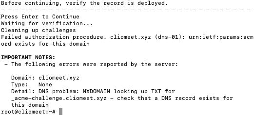
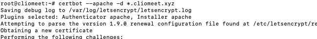
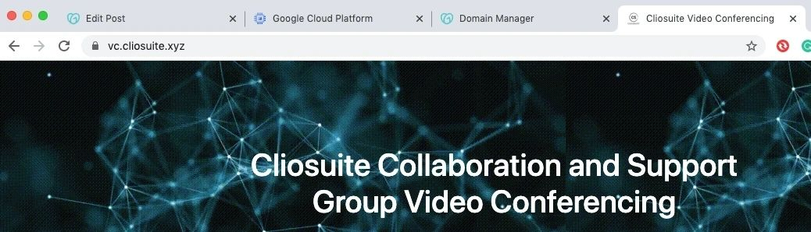
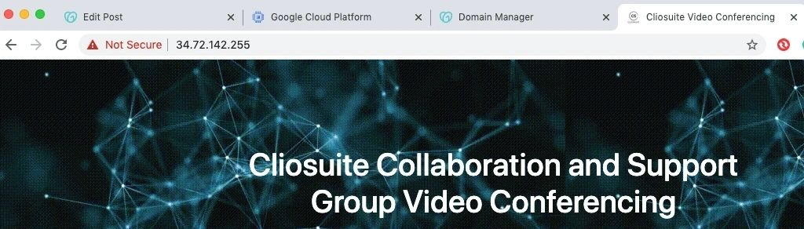
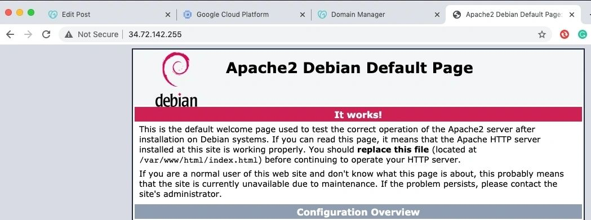

Web application development for the cloud
I have taught myself with almost no guidance, the basic concepts of Javascript with Node and Express JS to demonstrate a possible design for a web application. This app can help small and micro businesses manage all their online and offline stores in a single platform. I am not a front-end developer, I never was. But without HTML, CSS, Bootstrap, and Javascript, or Android/iOS, it is not possible to convince people and show them exactly what your working prototype will be like. You might want to use a prototyping tool to create screens, make changes and finalize the end product faster, but for apps that have some amount of backend processing, building a lite application might be a better choice. And in that process, you might encounter issues with the design or implementation in almost any product used worldwide, that are not addressed yet.
First step: Domain registration and SSL certificate application with Let's Encrypt
The only domain provider I explored to be very honest was GoDaddy, and that's because I have my main website here - https://cliosight.com I bought a wildcard SSL for this domain from Hostgator but had a hard time applying it, so I later went for Let's Encrypt which is free but needs renewal every three months. You will find several blog posts related to applying Let's Encrypt certificates to Nginx or Apache.
I ended up creating two domains cliosight.com, and cliomeet.xyz although only one should have worked fine. I will explain in detail why, when I describe the actual cloud deployment part. It's related to applying an SSL certificate to a domain and its subdomains which is a must for security and for the camera + microphone to work. Please note that there is a requirement for having an automation script in every machine for the auto-renewal of this certificate. The validity is for 3 months only.
There are currently these issues with Let's Encrypt that I faced while trying to apply the SSL in my cloud-hosted VM.
1. DNS-01 method of domain control verification never succeeds, and that has kept me from using a wildcard SSL. I neither found a proper guide to use the dns-01 method for Let's Encrypt wildcard SSL nor for the http-01 method. What values are we supposed to have in the TXT or A/AAAA record if it's a wildcard certificate? For the Apache server in Ubuntu, http-01 has not supported wildcards. Why is dns-01 unable to find the acme-challenge record that I have created? I am still looking for these answers. My future posts will try to give complete details of all these infrastructure-related issues and must-haves.



2. You will have to use separate VMs with different IP addresses to apply SSL certificates with Let's Encrypt if you want to use a subdomain style URL like suite.cliosight.com which is currently not secure but I am using it as a simple forward to a secure web page deployed in GCP app engine which makes it https by default. This is because the http-01 method for domain verification does not allow port numbers in A (IPv4) or AAAA (IPv6) records. And you might know that for a developer as in his or her local machine, will surely want more than one application to be running in different ports, at least during the initial phases of development and releases. E.g. having a 12GM RAM VM with 4vCPUs is better than having 4 VMs with 2GB RAM and 1 vCPU each to host 4 apps.
The workaround here is if you do not wish to create another VM instance, or your applications use a different tech stack not using Apache or Nginx servers, you can use the ProxyPreserveHost in apache2.config file (suggested by a Javascript expert, working with me). The code will be like:
ProxyPreserveHost On
ProxyPass /call http://localhost:5001
ProxyPassReverse /5001 http://localhost:5001
But the URL now will be cliomeet.xyz/call and not call.cliomeet.xyz for instance. If however, you wish to use just one domain then, you will have to insert the A record in the DNS of the parent domain with the IP of the VM against the subdomain name like "meet" and then assign the SSL. But the URL will be still longer - meet.cliosight.com/call, or meet.cliosight.com/cast vs cliomeet.xyz/call and cliomeet.xyz/cast. The choice is yours.
Please note that you need an apache2, Nginx, or some other web server like Microsoft IIS to be installed and running in the VM for an SSL.
In a GoDaddy account, the DNS management page for a domain has all the DNS records and also the list of forwarding domains and subdomains. You can simply point the IP address and port of the application to the forwarding subdomain and mask it, or use ProxyPreserve in apache configuration and only have the IP address of the VM in the list of A records.
If this all has been a little confusing, and you are using domains for the first time for cloud deployment, the following are the key points to remember:
1. Your Compute engine instance (Virtual Machine) will have a public IP address and you can assign ONLY ONE hostname to it for an SSL to work. You can have any number of unsecured subdomains or forwards though, that will simply show the default HTML running on port 80. E.g. you can try http://vm.cliosight.com versus http://cliomeet.xyz The latter will redirect to the https URL by default and show the one running on port 443. This is due to the VirtualHost configurations made in the apache2.config file of the Apache server installed.
http URLs are not used because they make your machine vulnerable to security attacks. And also bare IP addresses will only have the unsecured protocol http since Let's Encrypt SSL certificates CANNOT be applied to IP addresses but only to domains or subdomains names called FQDNs (fully qualified domain names). You will have to use another provider of SSL certificates so that you can use that for the VM's IP address.
E.g. http://51.158.120.163 versus http://cliomeet.xyz show the same page but the former is not secure because no SSL has been applied to the IP but only to cliomeet.xyz.
So basically the three key players in this are:
a. The compute instance or VM with a unique IP public address, (ifconfig in Linux will show the network config. details) where an Apache, Nginx, or another web server will be installed and running,
b. Your domain or subdomain name - FQDN, and
c. The (Let's Encrypt) SSL certificate.
Examples:
VM 1 - (IP: 51.158.120.163, secure hostname: cliomeet.xyz, Running Apache Web Server on :80 and Node js app on :3000)
If you try to use :80 instead, after stopping the Apache server, the SSL will not work. This is because it is a Node JS application running on the node server.
VM 2 - (IP: 34.72.142.255, secure hostname: vc.cliosuite.xyz, Running Cliosuite Video Conferencing on :443 and Apache for Debian on :80) Check these URLs (these links have expired and do not exist anymore):
vc.cliosuite.xyz
34.72.142.255:443
34.72.142.255 and observe the landing pages and security labels:



While trying to secure the node js application using certbot, as mentioned in https://www.sitepoint.com/how-to-use-ssltls-with-node-js/ , I ran into the same issue as discussed above. The domain name for my VM is cliomeet.xyz that already has Apache server running to which the certificate is applied.
The openssl is another option, but it did not seem to work with the VM's external IP address. The instructions I followed were from https://medium.com/@nitinpatel_20236/how-to-create-an-https-server-on-localhost-using-express-366435d61f28
The ProxyPreserve technique was throwing Internal Server Error due to some reason.
2. Domain structure mapping for a legal entity that can have a single domain with or without subdomains or a series of domains and subdomains for applications and websites hosted by cloud service providers or hosting services:
(Please note that most links given below are only examples and don't exist, these are suitable only for demonstrations, user research, and initial releases)
Cliosight
*La Clio Cosmetics and Accessories (Secondary business)
(laclio.cliosight.com or laclio.com)
*Cliosight Software (Primary business)
(cliosight.com or cliosoft.com or software.cliosight.com)
Software Product: Cliosuite
(cliosuite.xyz, suite.cliosight.com (introductory website), signup.cliosight.com (signup+surveys)) All three can be unified into a single application.
Cliosuite Modules:
1. Collaboration and Support (collab.cliosight.com or cliocollab.io or collab.cliosuite.io)
Cliosuite Collab and Support sub-modules:
1.1. Video Conferencing: meet.cliosight.com or vc.cliosuite.xyz or vc.suite.cliosight.com or cliosuite.xyz/vc or collab.cliosight.com/vc whichever way you prefer. But you will have to give references in your config files and code accordingly.
1.2. Broadcasting: cast.cliosight.com or collab.cliosight.com/cast etc. whichever way you prefer.
1.3. Collaborative Editing or Canvas design: cande.cliosight.com or collab.cliosight.com/cande or cliocanvas.io or cande.cliosuite.io etc.
1.4 Customer Complaints and Support: tickets.cliosight.com or support.cliosuite.xyz or support.suite.cliosight.com and support.laclio.cliosight.com etc.
1.5 Contacts Management: contacts.cliosuite.xyz or groups.cliosight.com etc.
The same can be followed by all other Cliosuite modules.
The final integrated product suite: Cliosuite at demo.cliosight.com will have all the functionalities as something like cliosuite.dev/marketing or cliosuite.dev/files.
The domains extensions popularly used in the tech communities are .com, .co, .io, .dev, .secure, .tech, .solutions, .support etc. So they can be divided into types based on:
a. Kind of institution that it is built for like .edu, .org. .gov, .com,
b. region or country specific, like .in (India), .uk (United Kingdom), .us (United States), .cn (China), .asia, .eu etc.
c. Purpose, profession or type of the website or application, like .email, .training, .reviews, .systems, .photography, .fashion etc. You will have to find out if your preferred domain type exists. I might want to choose the domain types to distinctively indicate what I am selling like laclio.fashion and cliosoft.solutions.
3. DNS management has two parts in a domain provider like GoDaddy:
3.1. The DNS records - A (for primary servers' IPv4 format IP addresses), AAAA( same but IPv6 format), CNAME (alias to other domains only), TXT (arbitrary text associated with the host like acme verification in dns-01 method of Letsencrypt)
3.2. Forwards - domain or subdomains
Subdomains - Masked and simple forward. (I have explored both)
In this, the masked forwarding of a subdomain to a particular URL like an unsecured IP address with port#, is an interesting part. This might not work smoothly at the first attempt if there are 3rd party integrations in the applications hosted on the VM like Okta authentication.
Second step: Authentication or Identity and access management
For any B2B or B2C web or mobile application, it is most important to only allow authorized users to access your services. Although initially, you might want people to try some parts of the application for free. In my case, I created a simple web application collab.cliosight.com to allow users to send an invite for a 1-1 online. The rest of it like Team meeting, broadcast, contact creation, etc. is to only show the parameters and depth of the design that will be similar in other modules.
The reason why it's a forward to a bare IP address and port is because of some bugs and will be explained in detail later.
Most of the time, you need to keep track of who is trying your application (user data), and which modules are clicked on and visited more frequently. For all that, as a developer and a product designer, you need to have the code in place.
Google Identity Platform, Auth0, Okta, and others were great to start with. The reason I did not prefer to maintain my own user database alone is that these products are quite advanced and have the full features of role-based access management, API authentication, easy multi-factor auth. integration and even other popular apps.
Okta's GitHub repo has a combination of various front-end and backend languages and frameworks with a variety of databases. This helped me in getting started more easily, and was, therefore, my preferred choice. I cloned the https://github.com/oktadeveloper/okta-node-express-15-minute-auth-example code into my local machine and created the free account with details and accordingly modified the .env file of my app.
After more than a year of trying out various things and developing, I have now realized that it is always better to start with cloud deployment right from the beginning. The reasons are that I ran into various browser-related issues after I built the basic application and ran it from a compute engine instance. I am using a MacBook Pro with Mojave for local development, while the cloud instances are mostly Linux releases.
The cloud service providers I am using currently are GCP and Scaleway. Also Azure, and AWS, but due to the lesser amount of trial time (1 month), I chose to stick to the previous two. Actually, Scaleway gave me a 100 euros voucher since I had applied for their Startup program free credits, though I didn't qualify, they gave me this trial voucher. And their charges for development compute, seemed to be lesser than all others. So I felt I could continue with them even later. Same for GCP app engine that has a free tier pricing after using all the free credits worth $300 for three months.
So the issues now with Okta/GoDaddy and browser compatibility that made me forward demo.cliosight.com to an IP address and port are:
1. With a subdomain created in GoDaddy, you might not be able to login successfully with Chrome, Edge, or Safari on a large screen. Firefox logs in successfully after one extra step but shows the IP address and port, which is not desirable. There are suggestions for solving this issue but I am yet to find out if they work.
2. In a mobile device, the bare IP address, and port URL http://51.158.120.163:3000 is appropriately showing the mobile view but once it is masked with a subdomain, dummy.cliosight.com, it shows the desktop site by default, and your application is no more responsive or legible. Only the Vivo browser on my phone is allowing the login but with a desktop view in the home and landing pages.
The suggestions that I received from the Okta developer support team were:
1. To use the Okta guide for deployment into Heroku, since I had asked for their Okta developers' GitHub repo to include cloud deployment steps: https://devcenter.heroku.com/articles/okta#complete-example
2. Use the custom URL domain guide from Cloudflare to help avoid using domain providers' URL forwards and running into issues:
https://developer.okta.com/docs/guides/custom-url-domain/cloudflare/
But in my case, I will have to transfer my domain to Cloudflare, something that I did not wish to do since I already have all my domain-related products in the single GoDaddy account.
For resolving the errors in dummy.cliosight.com login and page loading:
3. "Refused to display" error occurs because the website loads the URL in a frame. We need to change the application to load the authorization URL from the parent window.
4. Regarding the state error, "state mismatch, could not find a state in the session, this is likely an environment setup issue, loaded session: undefined" occurs if the application did not generate the "state" previously and, upon logging in with Okta and coming back to the application, the application sees the "state" received from Okta as being potential tampering with the request. This error possibly occurs if ExpressOIDC was not loaded correctly.
Third Step: Deployment into a free cloud service account
Cloud services can be costly especially if you are using a lot of storage for data. It is always better to go for free credits and longer-duration trial accounts. In GCP, I have used App Engine for suite.cliosight.com, collab.cliosight.com, signup.cliosight.com, and compute instance for meet.cliosight.com, https://cliomeet.xyz/py/, where the video conferencing application is installed or Jitsi meet's public video conferencing solution is being used currently, and python scripts are run.
As mentioned before, the video app which is a Jitsi instance needs an IP address against the FQDN which can also be a subdomain. Since it needs a high amount of memory and more importantly vCPUs, for optimum performance, it is meant for standalone only. You can find the guide to the Jitsi Meet installation for Ubuntu 18.04 here. I will explain the customization steps for Jisti in a different blog post.
For demo.cliosight.com I have used Scaleway's 4GB RAM dev machine. I cloned my project there and installed Apache, npm, nodejs, expressjs, MySQL (although not used right now) all other required packages before running it in the background.
GCP app engine is the easiest way to deploy an application in the cloud. You will need to install the gcloud SDK and get familiar with a few commands like gcloud init, gcloud app deploy, etc., and the right way to structure the app.yaml, dispatch.yaml, and any other config file specific to your application like requirements.txt.
Points to note while deploying an application to GAE (GCP App engine):
1. You need to decide well depending on the anticipated traffic, resource requirements, and stage of development, whether you should go for standard or flexible env. Standard is very economical, but certain application development language versions like I used for scripting in Python, was only supported in the flex env. The main application of Cliosuite that is anticipated to have a large database will be more economical in CE than GAE.
2. Static resources need to be specified well in app.yaml. In fact, it was handled without much effort from the developer's side before, but of late you will have to mention all the static file paths clearly. Otherwise, you might encounter 404 errors. In the app, call.cliosight.com there are a few APIs like /connect?key=xxxxxxxx, /send and /get that are used to establish a connection between two peers and send or receive data in the application. But I couldn't find a proper way to avoid 404 for these API calls and had to use a compute engine instance instead, to deploy the app and use ProxyPreserve for all the paths that had references to those calls and files. This is because, in the compute instance also, your application might not run as it did in your local machine. I had to use this workaround for all static resources as well which were handled by app.yaml in GAE.
3. Without SSL some of your application features might not work when you are masking the secure URL with an unsecured forwarding subdomain. For instance, signup.cliosight.com was initially masking https://smooth-concept-282010.ue.r.appspot.com/ in GoDaddy DNS forwarding subdomains for cliosight.com. But REST APIs for login and register were failing in Chrome and Edge, which was fixed later. For the assurance of the end-users, I did not want to show them an HTTP URL for signing up, and so I changed it to a simple forward.
The 502 Bad Gateway error is also encountered frequently and the page needs to be reloaded.
However, for VPN users, the simple forward doesn't seem to work. So whether to keep it masked or simply forward it to the target URL is a confusing situation. The only way out is to use a CE instance again and then start the node application there and then apply the SSL to the apache or Nginx server and use ProxyPreserve for the app running on a particular port#. For now, I have chosen not to do that and have ignored VPN users trying to sign up seeing the secured URL! This is if you wish to use the forwarding domains or subdomains in a provider like GoDaddy's account. Using the custom domain application guide of GCP is better but lengthier and more complicated. Because of this, I did not discuss it in detail in this post. But I will cover applying self-managed or Google-managed SSL to a custom domain in a different blog post.
Maybe developers can try using Kubernetes and create a Docker image of the application and deploy that instead. I haven't yet explored docker and I am not sure if that will be completely seamless. It might turn out to be easier though. This will also require a different blog post.
Compute Engine and App Engine are the two extreme ends of the spectrum of cloud provisioning - IaaS versus PaaS in GCP. While Kubernetes Engine lies in between the two is used for managing containerized applications. Serverless computing called Cloud functions in GCP, Lambda in AWS, and Azure functions in MS Azure, however, is the latest paradigm for more efficient resource consumption, by executing the code on-demand. Further up the scale of dynamic infrastructure are the Managed Services like Translation API, Image processing and Video Intelligence, etc.
In summary, related blog posts to this one will include:
1. Creating a basic web application with Bootstrap, Node JS, and MySQL and deploying it in a cloud compute instance and GCP App engine (standard and flex).
2. Using self and Google-managed SSL certificates in a cloud compute instance and Google's App Engine.
3. Deploying a Docker image of the Node application into the GCP Kubernetes engine.
Stay tuned!
Please write to me at cliosight@gmail.com if you have any possible resolutions to the open issues mentioned in this post or any queries and suggestions.